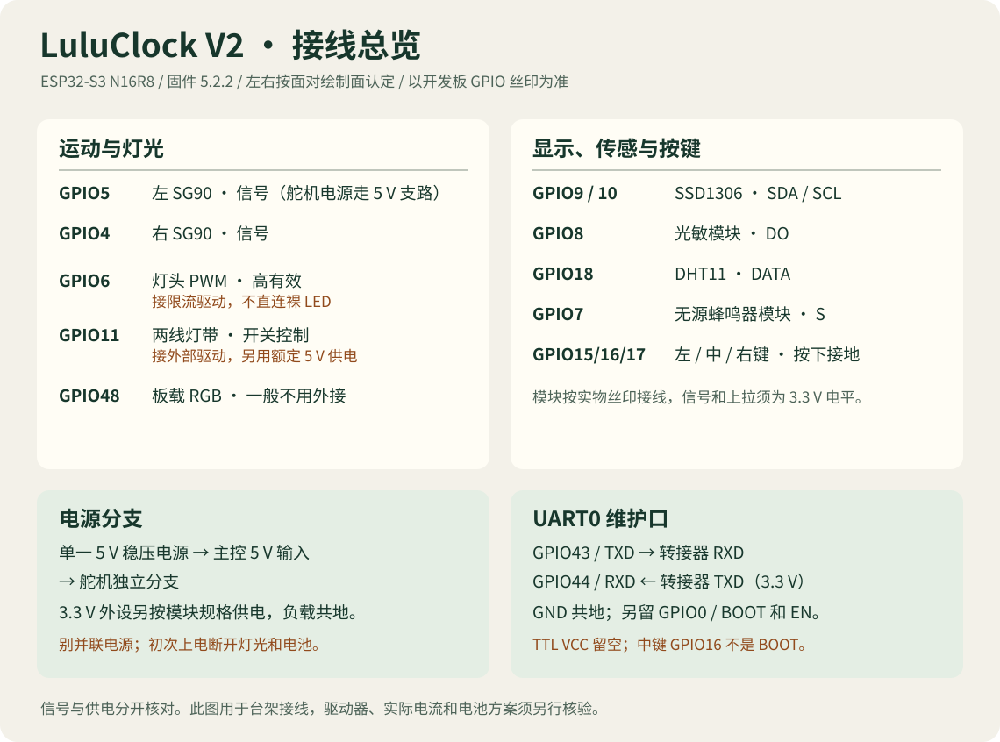
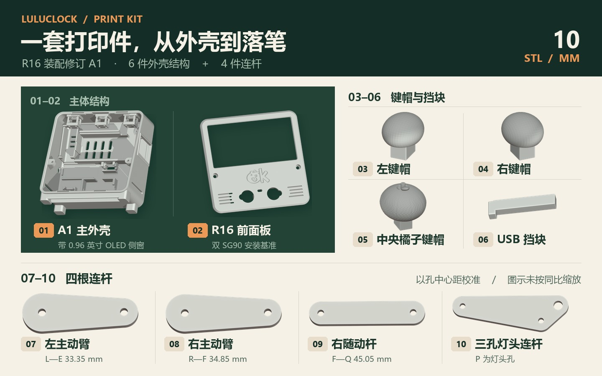
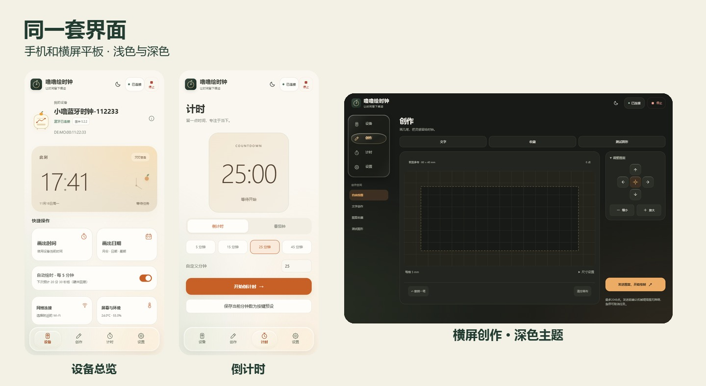
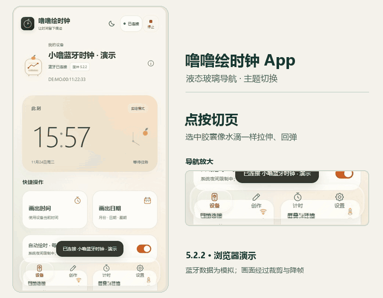
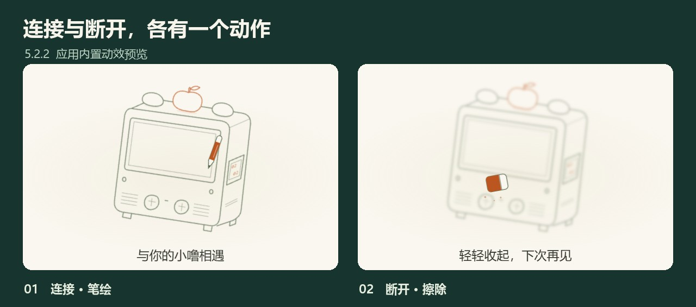
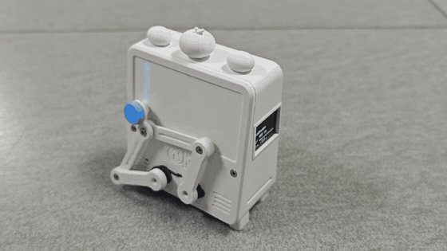

已完成一台整机装配并完成实机演示。看成品实拍（3 分 46 秒）：灯头在蓄光板上绘时、写字和画图；按顶部实体键可操作侧面 OLED；平板开启倒计时，机身也同步计时。
复刻用的 12 件 STL 包含六件 R16 A1 外壳与安装件、四件连杆、正面绘制屏背板和灯盖。按下文检查自己打印件的孔距、舵盘和运动间隙。
先验主控，再装机构
不用等零件打印完。第一次复刻建议按下面的顺序调试。
备料
按清单确认舵机轴、屏幕外形和紧固件。建议先用稳压电源调通动作，再加灯带或电池。
- 首轮启动
- ESP32-S3 N16R8、合适的 USB 数据线、带蓝牙的 Android 手机或平板。独立供电时，准备可限流的 5 V 稳压电源。
- 动作与装配
- SG90 × 2（带舵盘）、常开按键 × 3、整机 12 件打印件和匹配的紧固件与垫片。主控和空载舵机调通后再打印也可以。
- 用光实绘
- 约 80 × 40 mm 蓄光板、与材料匹配的紫光或近紫外 LED、接受 3.3 V PWM 的限流驱动。先确认电流规格与兼容性。
- 调试及选装
- 万用表、实尺或卡尺；外接 UART0 时准备 3.3 V 逻辑 USB-TTL。侧屏可选 0.96 英寸 SSD1306（128 × 64，I²C）；温湿度、光敏、蜂鸣器和灯带按需加。
主控烧录与首次连接
舵机、灯头、灯带和电池先断开。核对极性和短路后只给主控上电；如使用外部 5 V，不要同时接板载 USB 供电。空板用 Arduino IDE 串口上传，工具会写入引导、分区与应用。
- 安装 Arduino ESP32 3.3.12 和 U8g2 2.36.19。在仓库打开
firmware/JianClock/JianClock.ino，保留同目录源码。 - 选择 ESP32S3 Dev Module，Flash 设为 QIO 80 MHz / 16 MB、PSRAM 设为 OPI PSRAM、分区选 16M Flash (3MB APP/9.9MB FATFS)。USB CDC On Boot 设为 Disabled，USB Mode 选 Hardware CDC and JTAG，Upload Mode 选 UART0 / Hardware CDC，上传速率为 115200。
- 先「验证」编译，再选对串口执行「上传」。使用外接 USB-TTL 时须为 3.3 V 逻辑、TX/RX 交叉、共地且 VCC 留空；板载与外接串口桥不要同时驱动 UART0。无法下载时按硬件文档核对 BOOT（GPIO0）和 EN。
JianClock.ino.bin 是可用于兼容设备 OTA 的应用镜像。公开版 APK 不内置固件；需要 OTA 时，在应用里手动选择本地编译的应用镜像。
如果命令行工具因中文输出路径报错，可先用 firmware/build.ps1 的 -OutputDir 把输出指定到简短的纯英文目录。
打开 App 和系统蓝牙。Android 8–11 允许定位并打开系统定位，Android 12 及以上允许「附近设备」。进入「设备 → 扫描附近的时钟」，选择「小噜时钟 + 12 位编号」，确认固件号。
首次连接时舵机和灯头保持断开。App 连接后会同步手机时间，固件默认开启自动绘时。先关闭首页的「自动绘时」，到「设置 → 自动计划」关闭「允许执行计划和整点提示」，逐项停用已启用的计划并保存。主控重启后，接舵机前重新确认设置。
如需手动校时，到「设置 → 设备工具」点「同步手机时间」；App 和固件按北京时间（UTC+8）显示。
分步接线与复测
主控完成烧录和蓝牙验证后，按开发板丝印上的 GPIO 编号接线。面对绘制面，左舵机接 GPIO5，右舵机接 GPIO4。


- 左 / 右舵机
- GPIO5 / GPIO4
- OLED SDA / SCL
- GPIO9 / GPIO10
- 左 / 中 / 右键
- GPIO15 / GPIO16 / GPIO17
- 绘制灯 / 灯带
- GPIO6 / GPIO11，仅控制
- 蜂鸣器 / 光敏 DO / DHT11
- GPIO7 / GPIO8 / GPIO18
每次改线前先断电。断电核对短路与极性。舵机从独立的 5 V 负载支路供电，各支路共地，避免多个电源同时向同一电源轨供电。GPIO6 / GPIO11 只接驱动输入，裸 LED 与灯带不要从 GPIO 取电。
逐个接入 OLED、按键和传感器，每加一路先上电确认。接舵机前重新检查自动绘时和计划都已停用；先接一只空载舵机，再接另一只，灯头、灯带和电池继续断开。
打印外壳与机械臂
A1 主壳、R16 前面板、三个键帽、USB 挡块、四件连杆、正面绘制屏背板和灯光盖各打印一件。六件外壳另有 Blender 文件。


- 按清单以毫米、100% 导入 STL，不要镜像或缩放连杆。主壳通常后背贴平台、开口向上。前面板和小件逐一检查支撑、孔位和桥接，去毛边后核对按键回弹、Type-C 和 OLED 侧窗。
- 先试配正面绘制屏背板和灯光盖。背板与正面绘制屏对位，检查卡位、板面和引线空间；灯光盖确认安装方向、出光与走线，不遮光、不压线。
- 断电试配高、低座主动臂和舵盘，按实际安装位判断左右。量双轴及关节的中心距、孔径和错层高度，与固件默认几何对照；示意值不能代替实测。到步骤 05 校准至 A 位后再锁紧齿位。
- 前面板先不锁紧，手动走过全行程，确认盖件、灯头、前面板、关节和线束没有干涉。通过灭灯空走和 10 × 10 mm 方框验收后再合壳。

装臂、校准与空走
灯头在装臂和校准时保持物理断开，给关节留出行程，确保能迅速断电。
- 在「设置 → 机械校准」进入装臂模式，空载切换 A/B 确认输出对应的左右通道及转动方向。回到 A 位并断电后装舵盘，面对绘制面应为左主动臂水平向左、右主动臂竖直向上。
- 尝试 B 位（左主动臂向上、右主动臂向右），按首次调试流程微调并保存。试过 A/B 和归位后再断电装随动杆。
- 在「设置 → 绘制设置」打开「灭灯空走」，先小范围移动，再试方框、十字和近边缘的轨迹。确认能顺畅归位且错层与线束无干涉。出现卡阻立即断电检查。

看看 App 的液态玻璃、深浅主题和连接动画
在支持的 WebView 上，手机底栏与平板侧栏会折射玻璃边缘的背景。点选时胶囊拉伸回弹，拖动时它随手指移动。点主题图标，深浅主题从点击处作圆形过渡。

到「设置 → 外观与主题」，切到「完整动效」并点「预览连接」或「预览断开」，即可看笔绘时钟和橡皮擦动画，无需连接设备。

画出第一个 10 mm 方框
先用已确认的限流驱动和光绘材料走一遍短线，避开灯头照射眼睛。观察灯头与板面的间隙是否稳定，再做尺寸验证。
- 断电接入已验证控制逻辑与工作电流的限流灯头驱动，保持灭灯空走。
- 在 App 进入「创作 → 测试图形」，选择 校验方框 10 × 10 mm。载入画布后确认尺寸，先在中央空走，确认无干涉后关闭空走，从画布发送。
- 用「调整图案」里的方向键把方框平移到靠近可绘边缘的位置，整个方框都须留在虚线内。先空走该位置，再实绘。
- 在蓄光板上沿亮线中心量两个方框的横、纵尺寸，记录实测值、归位和有无刮碰。通过后再合壳，并试手绘、文字和自动绘时。

故障速查
Arduino IDE 无法连接，或编译报空间不足
先确认串口没有被占用、板型为 ESP32-S3，供电与 BOOT / EN 正常。编译空间不足时检查 16 MB 分区项，不能仅设置 Flash Size。首次烧录请上传草图；不要把 OTA 应用文件当成整包。
舵机上电抖动、掉线或主控复位
断开舵机与灯，恢复到主控单独启动，再逐路加负载。检查 5 V 支路、公共地与瞬态电流能力；确认连杆没有夹死、舵盘朝向与通道正确。故障未定位前保持灯头断电。
OLED 黑屏或倒置
先核对供电、SDA（GPIO9）、SCL（GPIO10）和模块接口型号。正常显示但倒置可调整 OLED_ROTATE_180 后重编；黑屏先排查接线，不从方向宏着手。
方框变形、没留光或某一路方向反了
先关灯检查轴距、孔中心距与三孔杆方向，确认正面左 GPIO5、右 GPIO4，随后校准零点和比例。空走正确但不留光时，再检查蓄光材料、限流驱动与灯头间距。